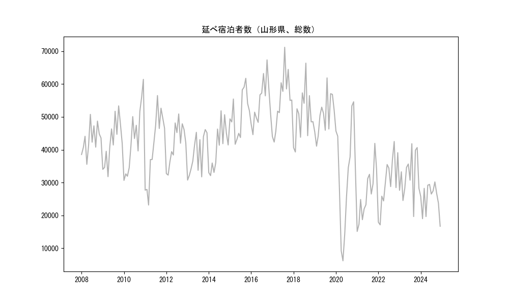
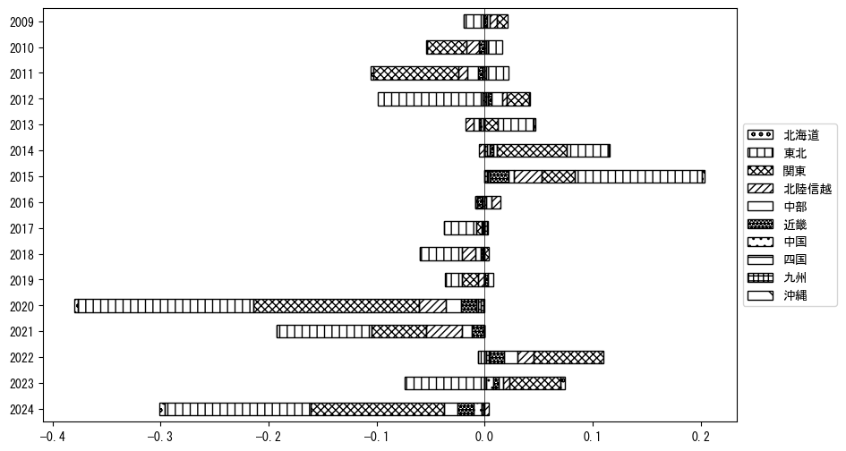

-
トップ
-
山形県
山形県
１．延べ宿泊者（総数）の推移
時系列グラフ

図１：山形県内の従業員数100人以上の宿泊施設での延べ宿泊者数（国外、居住地不詳を含む総数）。
基本統計量
表１：従業員数100人以上の宿泊施設での延べ宿泊者の総数（国外、および居住地不詳を含む）に関する基本統計量。単位は人泊。平均は１か月あたりの平均値を表す。図１に対応。
| 2008年 |
43,199 |
4,314 |
35,552 (4月) |
50,772 (6月) |
| 2009年 |
42,339 |
6,820 |
31,789 (4月) |
53,357 (10月) |
| 2010年 |
43,380 |
10,090 |
30,660 (1月) |
61,440 (12月) |
| 2011年 |
41,195 |
10,675 |
23,152 (3月) |
56,499 (8月) |
| 2012年 |
41,784 |
6,128 |
32,266 (2月) |
50,893 (8月) |
| 2013年 |
38,685 |
6,023 |
30,747 (1月) |
46,138 (11月) |
| 2014年 |
40,719 |
6,816 |
32,103 (2月) |
51,861 (8月) |
| 2015年 |
50,992 |
6,808 |
41,660 (4月) |
61,754 (10月) |
| 2016年 |
54,374 |
6,744 |
44,593 (2月) |
67,364 (10月) |
| 2017年 |
54,794 |
8,498 |
42,330 (2月) |
71,211 (8月) |
| 2018年 |
50,237 |
7,772 |
39,310 (2月) |
66,376 (8月) |
| 2019年 |
50,445 |
6,138 |
41,086 (2月) |
61,878 (8月) |
| 2020年 |
32,328 |
16,230 |
6,165 (5月) |
54,609 (11月) |
| 2021年 |
26,413 |
7,819 |
15,110 (1月) |
41,934 (11月) |
| 2022年 |
30,089 |
8,004 |
17,105 (2月) |
42,511 (10月) |
| 2023年 |
32,069 |
6,826 |
19,642 (9月) |
41,827 (8月) |
２．宿泊者数の重心（年平均の推移）
図２：山形県内の従業員数100人以上の宿泊施設での宿泊者数（国外、居住地不詳を除く）の重心（年平均の推移）。
全画面表示
重心の前年平均からの移動距離と方位、および緯度・経度
表２：重心の前年平均からの移動距離と方位、および緯度・経度。図２に対応。
| 2008年 |
— |
— |
37.2232 |
139.7543 |
| 2009年 |
西南西 |
1.6km |
37.2169 |
139.7385 |
| 2010年 |
北北東 |
5.2km |
37.2611 |
139.7582 |
| 2011年 |
北北東 |
31.8km |
37.5356 |
139.8613 |
| 2012年 |
南南西 |
29.1km |
37.2866 |
139.7587 |
| 2013年 |
東 |
5.6km |
37.2892 |
139.8216 |
| 2014年 |
南 |
5.3km |
37.2420 |
139.8166 |
| 2015年 |
西北西 |
9.4km |
37.2855 |
139.7259 |
| 2016年 |
北東 |
3.4km |
37.3088 |
139.7510 |
| 2017年 |
南南西 |
3.0km |
37.2858 |
139.7340 |
| 2018年 |
南 |
4.8km |
37.2423 |
139.7357 |
| 2019年 |
南西 |
5.1km |
37.2072 |
139.6988 |
| 2020年 |
北北東 |
14.6km |
37.3338 |
139.7441 |
| 2021年 |
東北東 |
7.3km |
37.3495 |
139.8242 |
| 2022年 |
南西 |
17.6km |
37.2247 |
139.7012 |
| 2023年 |
南南西 |
19.1km |
37.0778 |
139.5903 |
運輸局別延べ宿泊者数
時系列（年平均）
 図３：山形県内の従業員数100人以上の宿泊施設での１か月あたり平均宿泊者数（国外、居住地不詳を除く）の運輸局別内訳。
図３：山形県内の従業員数100人以上の宿泊施設での１か月あたり平均宿泊者数（国外、居住地不詳を除く）の運輸局別内訳。
寄与度（前年からの変化率に対する）

図４：山形県内の従業員数100人以上の宿泊施設での運輸局別宿泊者数（国外、居住地不詳を除く）から求めた寄与度。
３．宿泊者数の重心（月別）
図５：山形県内の従業員数100人以上の宿泊施設での宿泊者数（国外、居住地不詳を除く）の重心（月別）。観測期間は2008年1月から2023年12月まで。
全画面表示
全期間（2008年1月～2023年12月）の平均と月別平均の比較
表３：全期間の平均から月別平均までの移動距離と方位、および緯度・経度。図５に対応。
| 全期間 |
— |
— |
37.2731 |
139.7509 |
| 1月 |
北東 |
26.8km |
37.4657 |
139.9341 |
| 2月 |
北北東 |
16.0km |
37.4054 |
139.8233 |
| 3月 |
北北東 |
16.3km |
37.4117 |
139.8133 |
| 4月 |
北北西 |
2.6km |
37.2938 |
139.7377 |
| 5月 |
南西 |
13.0km |
37.1811 |
139.6604 |
| 6月 |
南南西 |
18.2km |
37.1279 |
139.6561 |
| 7月 |
南南西 |
10.0km |
37.1857 |
139.7247 |
| 8月 |
南南西 |
27.5km |
37.0344 |
139.6671 |
| 9月 |
南南西 |
10.4km |
37.1884 |
139.7005 |
| 10月 |
南西 |
18.8km |
37.1374 |
139.6249 |
| 11月 |
西 |
5.4km |
37.2751 |
139.6905 |
| 12月 |
北北東 |
38.7km |
37.5709 |
139.9782 |
運輸局別延べ宿泊者数
月別平均（2008年1月～2023年12月）
 図６：山形県内の従業員数100人以上の宿泊施設での宿泊者数（国外、居住地不詳を除く）の運輸局別内訳（月別）。
図６：山形県内の従業員数100人以上の宿泊施設での宿泊者数（国外、居住地不詳を除く）の運輸局別内訳（月別）。
寄与度（全期間の平均から月別平均への変化率に対する）
 図７：山形県内の従業員数100人以上の宿泊施設での運輸局別宿泊者数（国外、居住地不詳を除く）から求めた寄与度（月別）。
図７：山形県内の従業員数100人以上の宿泊施設での運輸局別宿泊者数（国外、居住地不詳を除く）から求めた寄与度（月別）。
４．データのダウンロード
出典：観光庁「宿泊旅行統計調査」に収録された「施設所在地、居住地別延べ宿泊者数（従業員数100人以上の施設）」
国土地理院「白地図（地理院タイル）」（図２と図５）